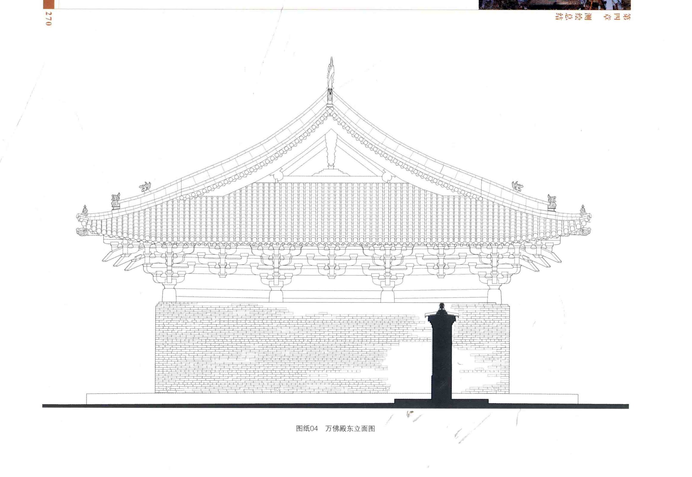
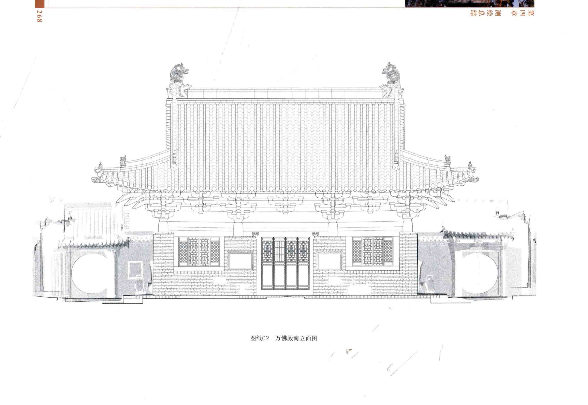

← 返回全部构件 来源与证据边界
待绑定来源 / 实体构件族 / F078
并排观察轮廓、截面和端部。视角不完全一致时，只作可见形态对照；不做像素尺寸测量或相似度百分比。

本次未找到可与此构件族直接对应的批准单件模型。系统包络、洞口、测量边界或装配位置不能替代该单件真实外形。
模型缺口保留；资料图仍可浏览和放大。
尚未取得可明确指认的万佛殿实物轮廓或独立模型；保留待绑定状态。
下列整页仅是建筑位置/环境线索，不能作为该独立构件外形已经确认的证明。

此图用于层位和组合关系；具体实例位置见右侧。未在图中强行标注尚未完成身份对应的构件。
尚未绑定到逐件位置；不据待绑定名单推定建筑必然存在该形态。
尚无独立批准 Master
本页变体：当前登记口径，必要变化见原始资料
登记记录：0 条，仅表示对应记录范围，不能直接解释为实际物理件数。
本页范围依据：现行 Registry · 正式状态与批准范围